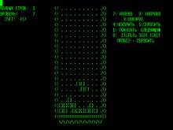
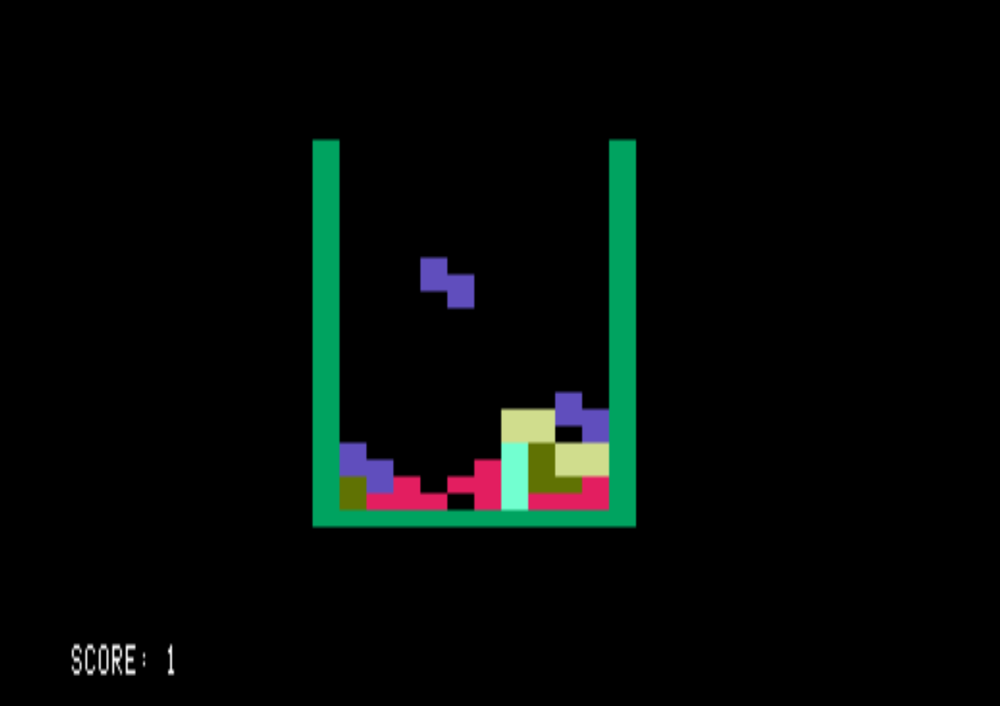
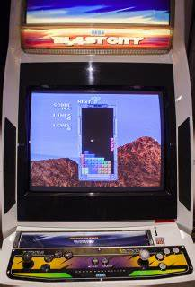
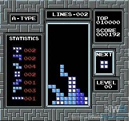

Gallery
These are the previous Tetris versions. Hover to see the description.

1984 Electronika 60 Tetris-First Tetris

1986 Apple II Tetris-Triggered the release of Tetris outside of the Soviet Union.

1988 Sega Tetris-The arcade version of Tetris

1989 NES Tetris-One of the most popular version
There are a lot more versions after this, but these are the most famous/important versions.